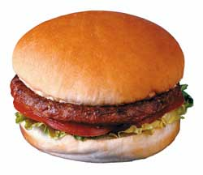
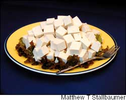
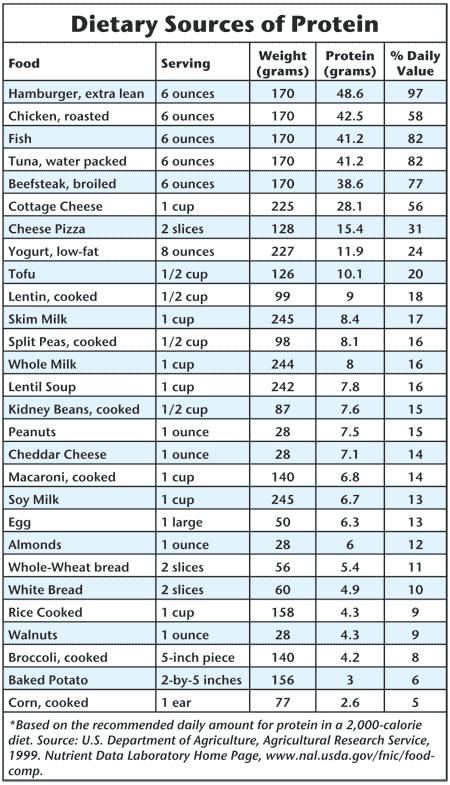

We hear a lot these days about the popularity of high-protein diets, but protein has been studied far less intensively than fats and carbohydrates in relation to long-term health and disease.
Intriguing research on soy has kindled new interest in protein that may eventually yield better information, however, that’s several years away. In the meantime, getting more protein from fish, chicken and vegetable sources, such as beans and nuts, and less from red meat and dairy products is high on the list of healthy eating strategies.
Your hair and skin are mostly protein. Ditto your muscles, the oxygen-carrying hemoglobin in your blood and the multitude of enzymes that keep you alive and active. Proteins are long, intricate chains fashioned from just 20 or so basic building blocks called amino acids. Because our bodies are constantly making new proteins and because we don’t store amino acids as we do fats, we need a near-daily supply of protein.
Some dietary proteins are complete, meaning they contain all the amino acids needed to make new protein. Others are incomplete, lacking one or more essential amino acids. Meat, poultry, fish, eggs and dairy products tend to be good sources of complete proteins, but vegetable protein is often incomplete. That’s why it is important for vegetarians to eat combinations that complement each other, such as rice and beans, peanut butter and bread, tofu and brown rice.
We know from laboratory studies and from the horrible “natural experiments” of war and famine that adults need per day about 8 grams of protein for every 20 pounds of weight, or about 50 grams (about 1.8 ounces) for an adult woman and 65 grams (about 2.3 ounces) for an adult man. You can hit this goal almost without thinking, given the abundance of protein-containing foods. Because it is so easy for Americans to get protein, it’s uncommon for healthy adults in this country to have a protein deficiency.
Aside from the minimum amount of protein needed to keep the body healthy, little guidance is available on the ideal amount of dietary protein. International comparisons aren’t much help because diets around the world tend to have similar amounts of protein. In the average American diet, which we tend to think of as meat-centered, about 15 percent of calories come from protein. In the largely vegetarian, rice-based diets that are common throughout Asia, about 12 percent of calories come from protein. (Rice, which we think of as a carbohydrate, is about 8 percent protein.) Other types of human studies haven’t paid that much attention to protein. Until there’s a good reason to change, a minimum of 8 grams of protein per 20 pounds of body weight is a good guide.
The fierce debate over which type of protein is better rumbles on two levels: personal health and environmental health.
From the medical or personal health standpoint, there just isn’t enough evidence to argue that one type of protein is better for you than another. Animal and vegetable proteins all by themselves have roughly equivalent effects on health; what matters is the protein package. Beef is an excellent source of complete animal protein, but it’s also very high in unhealthful saturated fat. The same is true for whole milk or dairy products made from whole milk. If you like beef, choose the leanest cuts you can find. Chicken, turkey and fish are better options. Beans, nuts, grains and other vegetable sources of protein are even better because they are generally low in saturated fat and high in fiber. However, if you intend to get most of your protein from plant sources, choose a variety of these foods to be sure that no essential components of protein are missing.
From a global health standpoint, eating vegetable protein is a lot more efficient, and kinder to the Earth, than eating meat. Feeding grain to cattle in order to make steaks and hamburgers is terribly inefficient - it takes 50 grams of grain to make 1 gram of edible protein from beef. We eat beef, pork and chicken from animals that have been fed grain, which requires increasingly large amounts of petroleum, fertilizers and pesticides to produce. And the concentrated wastes from feedlots pose substantial environmental pollution problems.
Fish is a healthy alternative to red meat and poultry, but our burgeoning appetite for this protein source is severely depleting many fish stocks. Fish farming may be able to expand our supply, but the environmental implications of this practice on a large scale aren’t yet clear. Eating a largely plant-based diet won’t solve all of these problems, either, but it could help sustain food production as we search for better ways to make food.
These days it’s hard to resist the siren song of soy, given the press it’s been getting. Soy’s ability to lower cholesterol is perhaps the best proven of all the benefits attributed to it. In a 1995 article in the New England Journal of Medicine, a statistical analysis of the results of 38 studies showed that eating about 50 grams of soy protein a day in place of animal protein reduced total cholesterol levels by 9.3 percent, LDL (bad) cholesterol by 12.9 percent, and triglycerides by 10.5 percent. If sustained over time, this could translate into a 20-percent lower risk of having a heart attack or developing other forms of heart disease.
However, 50 grams of soy protein is a lot of soy. You would need to drink eight 8-ounce glasses of soy milk a day (a whopping 1,200 calories) to get this or eat 1½ pounds of tofu. Also, soy protein can’t atone for the sins of a diet that’s high in calories and saturated fat, or for a lack of exercise. It will work only if it is part of an otherwise healthy diet.
The louder buzz about soy has to do with breast cancer and other cancers, as well as menopause. International studies show that Japanese women, who eat lots of soy, have low rates of breast cancer. Biologically speaking, soy products might act against cancer or cool hot flashes because soybeans are rich in phytoestrogens, literally plant estrogens. In the human body, phytoestrogens act like weak estrogens. Exactly what they do depends on the amount of phytoestrogens and where they are. In some tissues, phytoestrogens mimic the action of estrogen, and in other tissues, they block it.
Walter C. Willett, M.D., chair of the Department of Nutrition at the Harvard School of Public Health, is a widely respected, independent scientist who has devoted his career to studying the complex connections between what we eat and our long-term health. This article is from Eat, Drink and Be Healthy, by Dr.Willett, with P.J. Skerrett. Copyright 2001 by the President and Fellows of Harvard College. Reprinted by permission of the Free Press, a division of Simon & Schuster, Inc., N.Y. - Mother
The estrogen-mimicking activity of phytoestrogens might, in theory, reduce hot flashes and other problems that occur during menopause - a time of falling estrogen levels. However, in studies in which half of the women received soy estrogens and half received placebos, hot flashes declined over time in both groups, with only small differences between them. Also in theory, the estrogen-blocking effects of soy estrogens could lead to a reduction in breast cancer - estrogen stimulates the growth and multiplication of breast and breast cancer cells.
But the simplistic explanation, that plenty of soy in the diet accounts for the low rates of breast cancer in Japan, is almost certainly wrong. Breast cancer rates have been low throughout Asia (at least until recently), and soy isn’t a staple in many Asian countries.
When it comes to soy and breast cancer, the ever-accumulating studies don’t provide a clear picture. One informative study comes from the Shanghai Cancer Institute in China. An international team of researchers interviewed more than 800 women with breast cancer, and an equal number of similar-aged women without breast cancer, asking about their diets. The women with breast cancer, it turned out, ate the same amount of soy as the women without it.
The flip-flopping research on soy and breast cancer wouldn’t be a huge concern if eating soy protein were completely safe, but that may not be the case. In one randomized trial, 48 women with a suspicious breast lump were randomly assigned to either their normal diet or their normal diet plus a soy supplement containing 45 milligrams of isoflavones a day for the 14 days until a scheduled breast biopsy. Breast tissue removed from women taking the soy supplement showed substantially more cell growth and division than the tissue removed from women not taking soy.
Another troubling study, this one among older persons of Japanese ancestry living in Hawaii, shows that those who continued to eat the traditional soy-based diet were more likely to have memory loss and other cognitive problems than those who had made the switch to a more-Western diet. This finding cannot be readily dismissed because estrogens play a role in maintaining normal mental functions, and it is possible that too much antiestrogen in the wrong place at the wrong time could be harmful.
Clearly both of these studies must be confirmed, but they point out the absolutely critical need to learn more about how soy protein affects different tissues at different life stages. The estrogen-blocking activity of phytoestrogens may be beneficial for young women, whose breast, ovarian and other tissues are bombarded by more powerful human estrogens. But it would be a shame to make blanket recommendations for soy as a way to prevent breast cancer if phytoestrogens also stimulate the growth of breast cancer cells later in life, or if they block estrogen in the brain, where this hormone helps maintain memory and cognitive function.
Similar uncertainties exist for prostate cancer, because higher levels of estrogen appear to reduce the risk. Whether soy estrogens mimic or block the effects of natural estrogens in the prostate is still unclear.
I’m still a bit cautious about soy, specifically about eating a lot of it. You should aim for a few servings a week, not a few a day. For women who are plagued by hot flashes or other problems related to estrogen loss, boosting soy intake for a while may help a bit. For now, though, this should not become a long-term habit. Women diagnosed with breast cancer probably shouldn’t eat lots of soy, and you should treat concentrated soy supplements or isoflavone pills with the same caution as a totally untested new drug.
|
 A hamburger provides a full day?s supply of protein, but is it good for you? Protein from leaner meats and from vegetable sources has fewer calories and less saturated fat. |
 Studies show that soy can lower cholesterol, but those results were based on eating the equivalent of 1_ pounds of tofu a day. Because soy might be associated with health risks, Dr. Willett recommends eating soy only in moderate amounts. |
 |